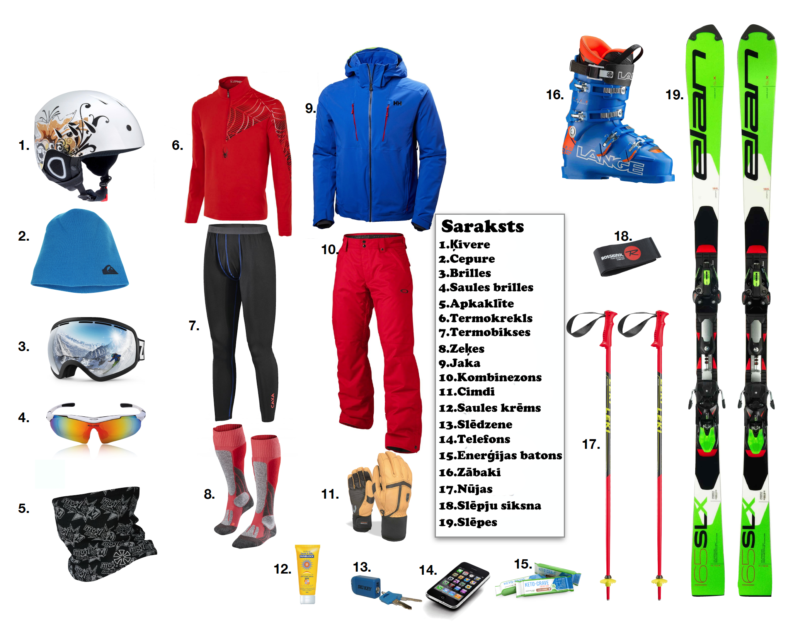

Piemērots apģērbs slēpošanai
Slēpošanai vislabāk der kārtu princips - vairākas plānākas drēbju kārtas, kuras nepieciešamības gadījumā var vilkt nost vai pievienot:
- Pirmā kārta: termoveļa, kas novada mitrumu no ādas.
- Otrā kārta: silts flīsa džemperis vai džemperis no vilnas.
- Trešā kārta: vēju un mitrumu aizturoša jaka un bikses.
- Cimdi, cepure vai ķivere ar plānu cepurīti, kakla sargs (bufanda).
Kā uzvilkt zābakus un slēpes
- Vispirms uzvelc slēpošanas zeķes - bez krokām, lai nerastos noberzumi.
- Ievieto kāju zābakā un cieši aiztaisi sprādzes vai šņores, lai zābaks cieši pieguļ, bet nesāp.
- Novieto slēpi uz līdzenas vietas, uzliec zābaka priekšgalu stiprinājumā.
- Spied ar papēdi uz leju, līdz dzirdi klikšķi - zābaks ir nofiksēts.
- Pirms slēpošanas pārbaudi, vai zābaks stingri turas un slēpe neatvienojas.
Pamatinventārs

Foto: https://skichatter.com/10-things-to-know-before-your-first-ski-day/?v=05c7c5a71e52